[3-2] LED闪烁 / LED流水灯 / 蜂鸣器 — 学习笔记
- 课程：江协科技《STM32入门教程-2023版 细致讲解 中文字幕》
- 视频：BV1th411z7sn?p=6，39:10
- 素材：235 帧关键帧（每 10 秒，宽 1280px）+ PP-OCRv4 画面硬字幕 OCR（483 段）；关键截图 15 张随笔记收录（源图在
vidsum_out/stm32_p6/frames/，站内图片在assets/images/stm32-06/） - 字幕情况：该集 B 站没有 CC/AI 字幕，文本由画面烧录的中文字幕 OCR 得到（source=subtitle-ocr），偶有错字已按画面校正。
一句话结论
这一集把 [3-1] 的 GPIO 理论落成代码：先快速重建一个标准库工程（开始到编译下载跑通），再依次写 LED 闪烁（RCC 开时钟 → GPIO_Init → 输出函数 + Delay 延时）、LED 流水灯（8 个 LED、GPIO_Write 直接写 ODR、低电平点亮所以数据要取反）、蜂鸣器（PB12 低电平触发，注意避开 JTAG 引脚），最后讲“怎么查库函数/手册/例程”。
0. 三个程序与硬件
| 程序 | 硬件连接 | 现象 |
|---|---|---|
3-1 LED闪烁 |
1 个 LED：长脚（正极）→ 正极供电孔，短脚 → PA0（低电平点亮；为简化不接限流电阻） | LED 每 500ms 闪烁 |
3-2 LED流水灯 |
8 个 LED：正极接正极供电孔，负极分别接 PA0～PA7 | 8 个 LED 依次流水点亮 |
3-3 蜂鸣器 |
有源蜂鸣器：VCC → 正极排、GND → 负极排、控制极 → PB12（低电平触发响） | 蜂鸣器“滴滴”鸣响 |
- 面包板/最小系统板/ST-LINK 接线：面包板红线（正极）朝上，最小系统板跨中间凹槽插；GND 用蓝跳线引到负极供电排、3.3V 用红跳线引到正极排；ST-LINK 的引脚不是按顺序排的，要按丝印 3.3V / SWDIO / SWCLK / GND 对应连接，别插错。
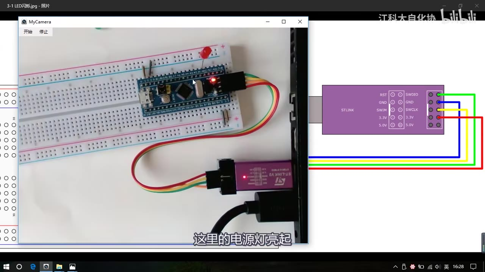
图 1：3-1 LED闪烁 面包板接线——最小系统板 + ST-LINK，电源灯亮
1. 快速搭一个标准库工程
本集从零演示一遍新建工程（详细原理见 [2-2] 新建工程笔记），以后就可以直接复制现有工程改名：
- Project → New Project，选工程总文件夹；按 Ctrl+Shift+N 新建工程文件夹（如
3-1 LED闪烁）； - 工程名起
Project，选芯片 STM32F103C8，关掉 Manage Run-Time Environment 小助手； - 在工程文件夹里建
Start、Library、User三个文件夹，从固件库复制文件：Start：启动文件、stm32f10x.h、system两个文件、core_cm3两个文件（启动文件全部复制、Keil 分组只加 md.s）；Library：标准外设驱动src全部.c和inc全部.h；User：从固件库Project\...\Template复制main.c、stm32f10x_conf.h、stm32f10x_it.c/h。
- Keil 里（三个箱子的工程管理按钮）删掉默认组，新建
Start、Library、User三个组，分别 Add Files 把文件夹里的文件加进去； - 魔术棒 → C/C++：Include Paths 添加
..\Start、..\Library、..\User，Define 填USE_STDPERIPH_DRIVER； - Debug 选 ST-Link Debugger，Settings → Flash Download 勾 Reset and Run；
- 清空 main.c 原有代码，编译 → 0 Error(s), 0 Warning(s)，下载正常。
- 工程清理小工具：视频分享了一个
keilkill.bat（在工程总文件夹STM32Project的1-2 keilkill批处理文件夹里），复制到工程文件夹里双击运行，会删掉Listings、Objects等中间文件，工程从 20MB 缩小到 2MB 左右，方便打包分享给别人。 - 以后写新程序直接复制上一集的工程文件夹改个名字即可，不用每次新建。
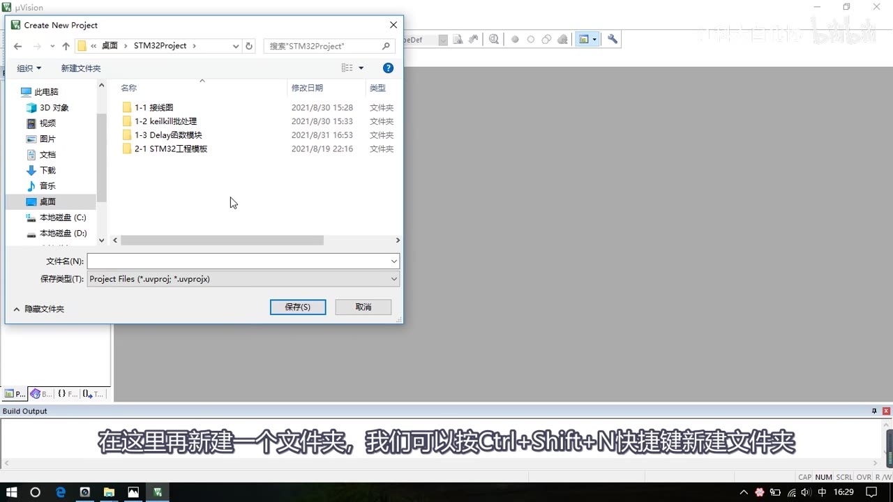
图 2：新建工程——Create New Project 里按 Ctrl+Shift+N 新建“3-1 LED闪烁”文件夹
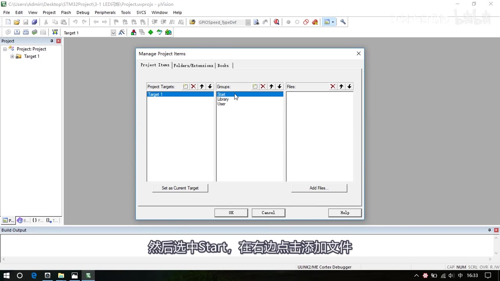
图 3：Keil 工程管理——Start / Library / User 三个组，Add Files 把文件加进来
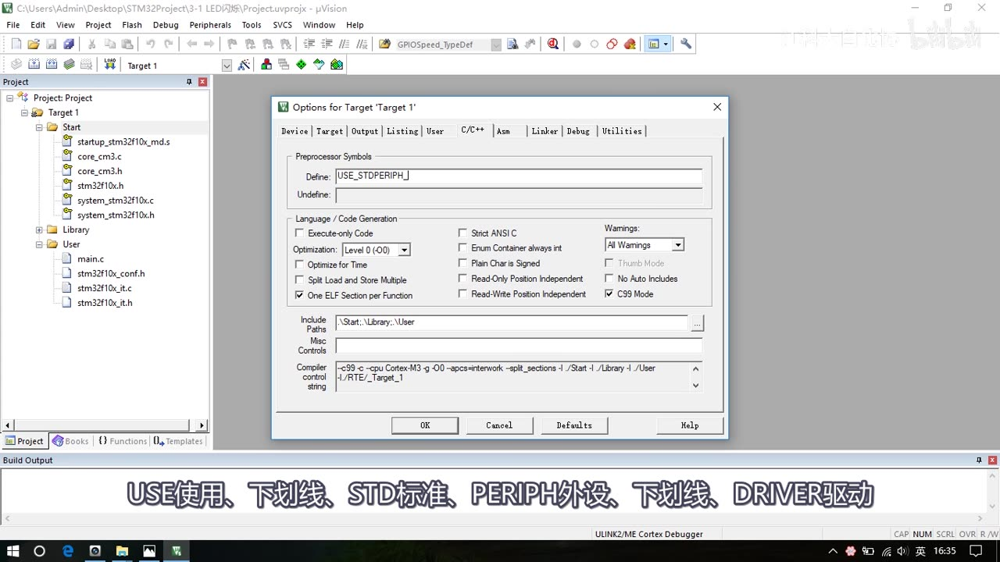
图 4：C/C++ 选项——Define 填 USE_STDPERIPH_DRIVER（画面为输入中），Include Paths 已加三个文件夹
2. 库函数地图（RCC 与 GPIO）
- 打开
Library里的stm32f10x_rcc.h，拖到最下面（.h 文件末尾一般就是函数声明）：RCC_AHBPeriphClockCmd、RCC_APB2PeriphClockCmd、RCC_APB1PeriphClockCmd：分别开启 AHB / APB2 / APB1 外设时钟，参数是“外设枚举 + ENABLE/DISABLE”；GPIO 挂在 APB2 上，所以用RCC_APB2PeriphClockCmd。
- 打开
stm32f10x_gpio.h：GPIO_DeInit（复位外设）、GPIO_Init（用结构体初始化）、GPIO_StructInit（给结构体赋默认值）；- 4 个读函数：
GPIO_ReadInputDataBit/GPIO_ReadInputData/GPIO_ReadOutputDataBit/GPIO_ReadOutputData； - 4 个写函数：
GPIO_SetBits/GPIO_ResetBits/GPIO_WriteBit/GPIO_Write。
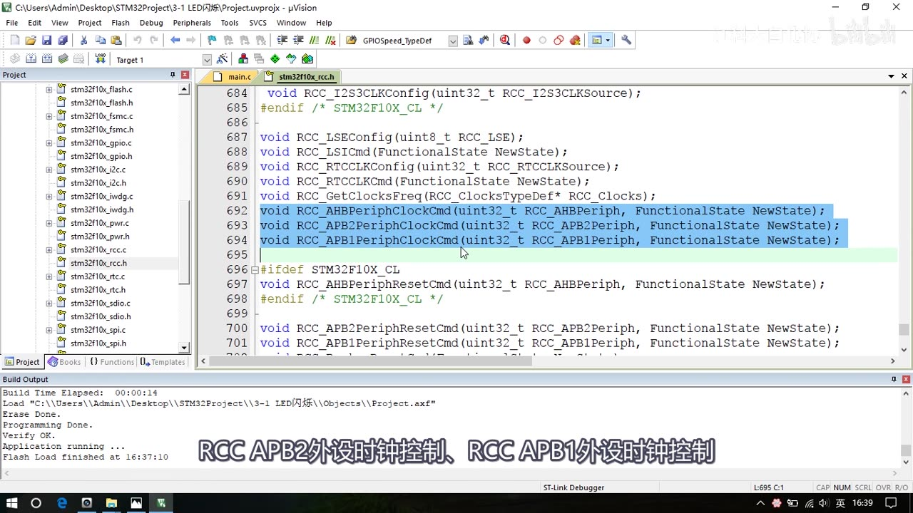
图 5：stm32f10x_rcc.h 末尾——最常用的三个时钟使能函数（AHB/APB2/APB1）
3. LED 闪烁（3-1）
点灯三步：① 用 RCC 开启 GPIO 时钟 → ② 用 GPIO_Init 初始化 GPIO → ③ 用输出函数控制引脚。
#include "stm32f10x.h"
#include "Delay.h"
int main(void)
{
RCC_APB2PeriphClockCmd(RCC_APB2Periph_GPIOA, ENABLE); // ① 开 GPIOA 时钟
GPIO_InitTypeDef GPIO_InitStructure; // ② 初始化 GPIO
GPIO_InitStructure.GPIO_Mode = GPIO_Mode_Out_PP; // 推挽输出
GPIO_InitStructure.GPIO_Pin = GPIO_Pin_0; // PA0
GPIO_InitStructure.GPIO_Speed = GPIO_Speed_50MHz;
GPIO_Init(GPIOA, &GPIO_InitStructure);
while (1) // ③ 输出函数控制
{
GPIO_WriteBit(GPIOA, GPIO_Pin_0, Bit_RESET); // 低电平 → 点亮
Delay_ms(500);
GPIO_WriteBit(GPIOA, GPIO_Pin_0, Bit_SET); // 高电平 → 熄灭
Delay_ms(500);
}
}
- 输出函数：
GPIO_SetBits置高、GPIO_ResetBits置低、GPIO_WriteBit按位写、GPIO_Write写整个端口；GPIO_WriteBit第三个参数是枚举BitAction（Bit_RESET/Bit_SET），如果直接写 0/1 需要强制类型转换(BitAction)0/(BitAction)1，否则可能报错/警告。 - Delay 延时模块：资料里提供了 Delay 函数模块（在工程总文件夹的
1-3 Delay函数模块文件夹里），复制到本工程里新建的System文件夹；Keil 里加System组并添加 Delay 文件，主函数#include "Delay.h"后就能用Delay_us/Delay_ms/Delay_s。 - 现象：LED 每 500ms 闪烁；把 500 改成 100 会明显变快。
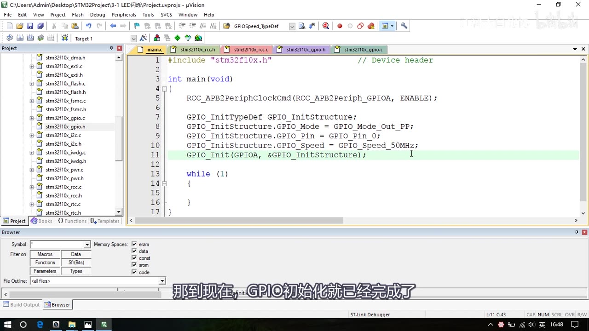
图 6：GPIO_Init 完整初始化代码——Out_PP、Pin_0、50MHz、GPIO_Init(GPIOA, &…)
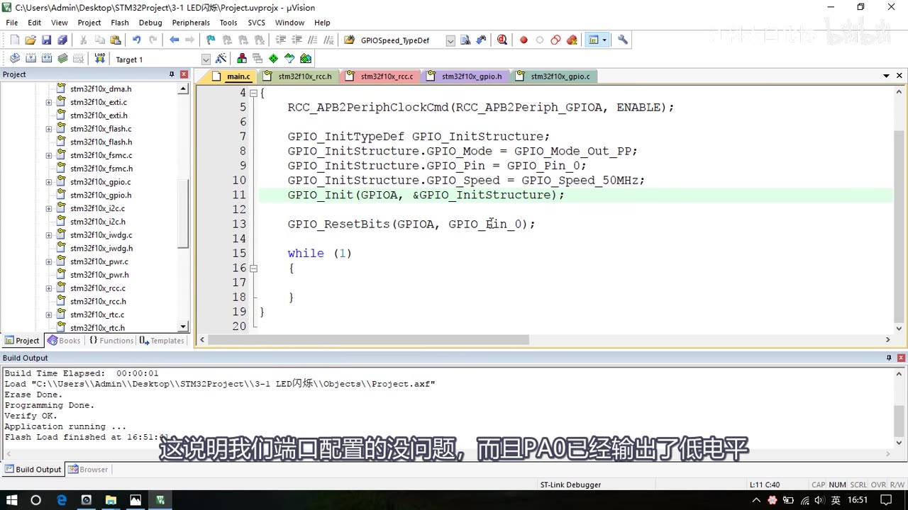
图 7：GPIO_ResetBits 点亮测试——下载成功（Flash Load finished），PA0 输出低电平
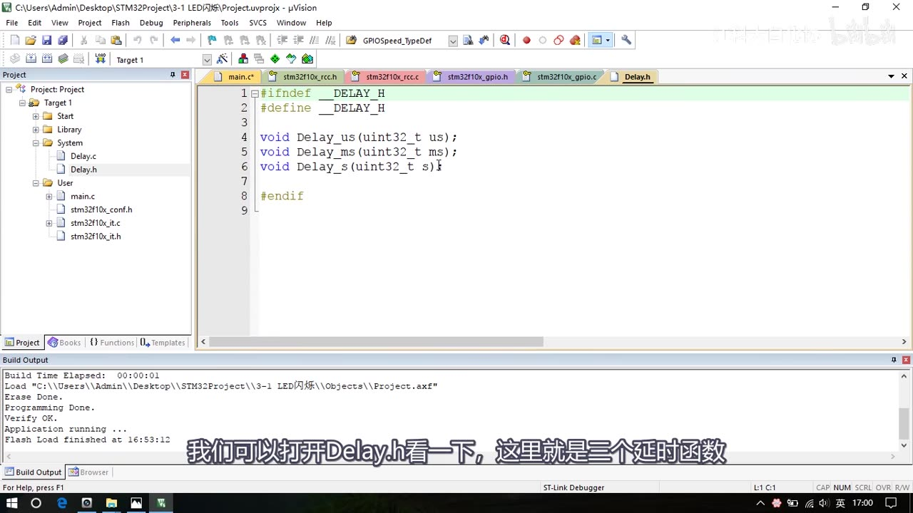
图 8：System/Delay.h——三个延时函数 Delay_us / Delay_ms / Delay_s
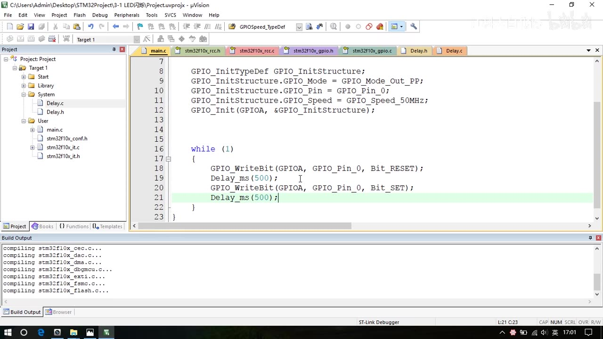
图 9：LED 闪烁完整代码——WriteBit(Bit_RESET) + Delay_ms(500) + WriteBit(Bit_SET)
推挽输出 vs 开漏输出实验（把 LED 反接成高电平点亮：长脚接 PA0、短脚接 GND）：
| 模式 | 高电平 | 低电平 | LED（高电平点亮接法） |
|---|---|---|---|
| 推挽输出（Out_PP） | 上管导通、有驱动 | 下管导通、有驱动 | 正常闪烁 |
| 开漏输出（Out_OD） | 高阻态、无驱动 | 下管导通、有驱动 | 高电平点不亮；把 LED 接回低电平点亮接法时低电平能点亮 |
- 结论：一般输出都选推挽；开漏只在特殊场合用（视频原话“特殊的地方才会用到开漏模式”，例如 [3-1] 讲过的外接上拉输出 5V、I2C 多机通信等）。
- 改用开漏只需把结构体的
GPIO_Mode改成GPIO_Mode_Out_OD。
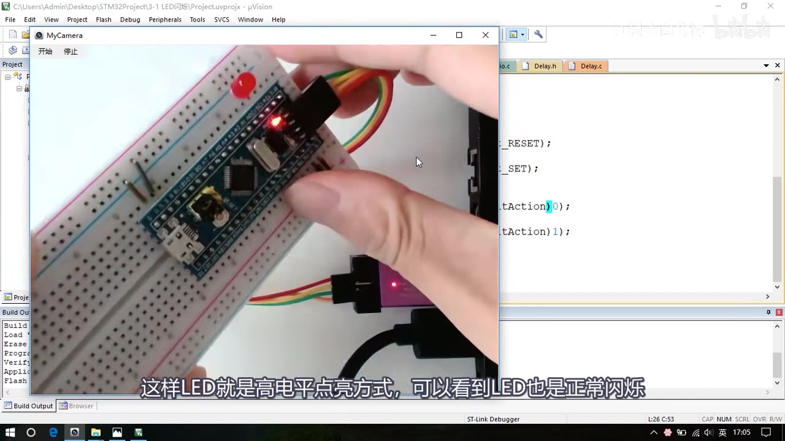
图 10：推挽输出高电平驱动实验——LED 反接（长脚→PA0、短脚→GND）也能正常闪烁
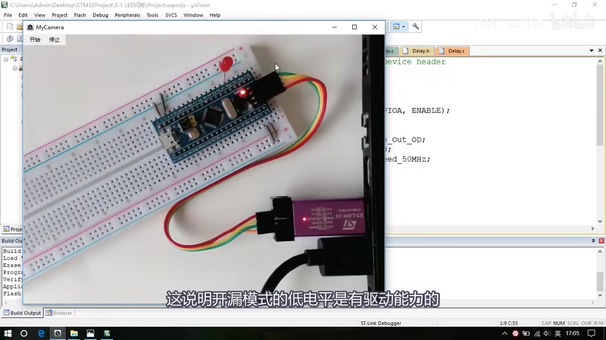
图 11：开漏输出实验——开漏模式下高电平无驱动、低电平有驱动能力
4. LED 流水灯（3-2）
- 复制
3-1 LED闪烁工程文件夹，改名为3-2 LED流水灯，双击.uvprojx打开； - 硬件：8 个 LED 的正极都接正极供电孔，负极分别接 PA0～PA7（低电平点亮）；
- 初始化 Pin 时可以用按位或一次选中多个引脚：
GPIO_Pin_0 | GPIO_Pin_1 | … | GPIO_Pin_7，或者用GPIO_Pin_All； - 用
GPIO_Write(GPIOA, PortVal)一次写整个输出数据寄存器（ODR）；因为 LED 是低电平点亮，想让 0 号灯亮、其余灭，数据要取反：~0x0001。
while (1)
{
GPIO_Write(GPIOA, ~0x0001); // 0000 0000 0000 0001 取反 → 只有 PA0 低电平
Delay_ms(500);
GPIO_Write(GPIOA, ~0x0002); // 0000 0000 0000 0010
Delay_ms(500);
GPIO_Write(GPIOA, ~0x0004);
Delay_ms(500);
GPIO_Write(GPIOA, ~0x0008);
Delay_ms(500);
GPIO_Write(GPIOA, ~0x0010);
Delay_ms(500);
GPIO_Write(GPIOA, ~0x0020);
Delay_ms(500);
GPIO_Write(GPIOA, ~0x0040);
Delay_ms(500);
GPIO_Write(GPIOA, ~0x0080);
Delay_ms(500);
}
- 0x0001、0x0002、0x0004、0x0008、0x0010、0x0020、0x0040、0x0080 就是二进制里逐位为 1；取反后对应引脚输出低电平点亮。
- 想更花哨可以改成数组查表：把显示数据放进数组、循环取用（视频提到做法，未展开）。
- 现象：8 个 LED 以 500ms 间隔循环流水点亮（把 500 改小会更快）。
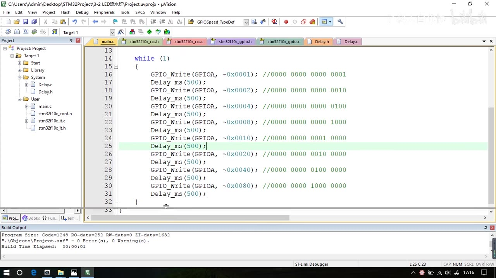
图 12：流水灯完整代码——GPIO_Write(GPIOA, ~0x0001) 依次到 ~0x0080，编译 0 Error/0 Warning
5. 蜂鸣器（3-3）
- 接线：有源蜂鸣器 VCC → 正极供电排、GND → 负极供电排、控制极 → PB12。
- ⚠️ 避开 PA15 / PB3 / PB4：这三个引脚默认是 JTAG 调试口（JTDI/JTDO/NJTRST），直接当普通 IO 用不会输出；必须用时要在代码里做引脚重映射配置。选 PB12 就没这个问题。
- 复制
3-1 LED闪烁工程，改名3-3 蜂鸣器；把初始化里的 GPIOA 改成 GPIOB、GPIO_Pin_0改成GPIO_Pin_12； - 主循环写“响-停-响-停”节奏（有源蜂鸣器低电平触发）：
RCC_APB2PeriphClockCmd(RCC_APB2Periph_GPIOB, ENABLE);
GPIO_InitStructure.GPIO_Mode = GPIO_Mode_Out_PP;
GPIO_InitStructure.GPIO_Pin = GPIO_Pin_12;
GPIO_InitStructure.GPIO_Speed = GPIO_Speed_50MHz;
GPIO_Init(GPIOB, &GPIO_InitStructure);
while (1)
{
GPIO_ResetBits(GPIOB, GPIO_Pin_12); // 低电平 → 响
Delay_ms(100);
GPIO_SetBits(GPIOB, GPIO_Pin_12); // 高电平 → 停
Delay_ms(100);
GPIO_ResetBits(GPIOB, GPIO_Pin_12); // 响
Delay_ms(100);
GPIO_SetBits(GPIOB, GPIO_Pin_12); // 停
Delay_ms(700);
}
- 现象：蜂鸣器“滴—滴——”有节奏地响。
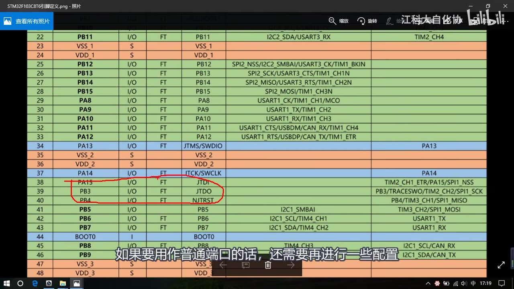
图 13：引脚定义图——PA15/PB3/PB4 默认是 JTAG 调试口，用作普通 IO 需要额外配置
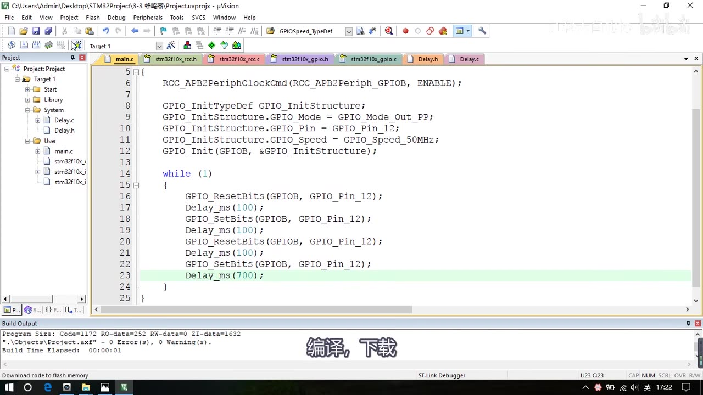
图 14：蜂鸣器最终代码——GPIOB + Pin_12 推挽输出，ResetBits 响 / SetBits 停，Delay 100/100/100/700ms
6. 怎么查库函数（本集附送的方法）
- 看 .h 文件末尾：库函数的声明一般都在头文件最后（
rcc.h、gpio.h），先看函数列表；在函数上右键 → Go To Definition 可以跳到定义看参数（F12 是 Keil 的快捷键，笔记补充）； - 中文库函数用户手册：资料文件夹里有一份中文《STM32F103xx 固件函数库用户手册》，每个函数下面都有说明和例程，可以直接复制过来用（注意它是旧版本资料，和 V3.5.0 可能有出入）；
- 英文 CHM 帮助文档：V3.5.0 没有官方中文用户手册，固件库压缩包里附带了英文 CHM 帮助文档（STM32F10x Standard Peripherals Firmware Library），可按函数/结构体索引查；
- 网上参考例程：百度/CSDN 搜“STM32 GPIO 初始化程序”等参考别人代码（注意甄别）；配合有道词典看英文注释。
- 小坑：清理中间文件后，右键“跳转到定义”可能提示没有信息，重新编译一次即可。
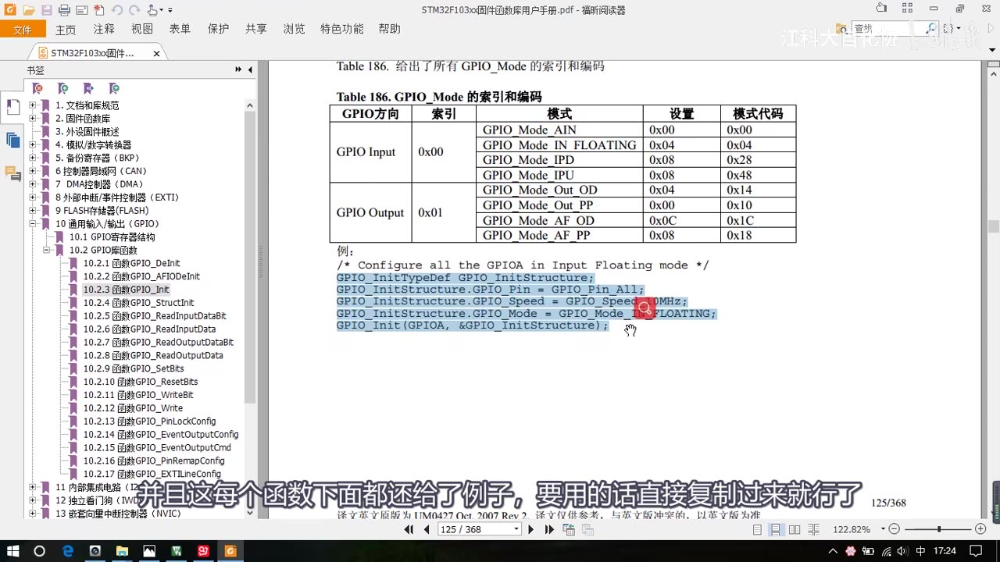
图 15：资料里的中文库函数用户手册——每个函数有说明和例程（如图中 GPIO_Mode 索引表及其例程）
7. 坑与易错点
- ST-LINK 接线别插错：引脚不按顺序排，要按丝印一一对应（3.3V/SWDIO/SWCLK/GND）。
- PA15/PB3/PB4 默认 JTAG：直接配成普通输出不会生效，需要用其他引脚或做重映射。
- 推挽 vs 开漏：推挽高低电平均有驱动；开漏高电平是高阻态、没有驱动能力，一般输出用推挽。
GPIO_WriteBit第三参数是枚举：Bit_RESET/Bit_SET；直接写 0/1 要加(BitAction)强转。- Delay 模块要加进工程：System 组 + 文件 + Include Paths，否则
#include "Delay.h"报错。 - 老编译器要求局部变量定义放开头：视频提到有些老编译器要求所有局部变量定义必须放在函数最前面（C89 风格限制，笔记补充）；新编译器一般不受限。
- 工程中间文件很大：
Listings、Objects占空间（20MB），分享前用清理工具删掉（约 2MB）。 - 低电平点亮：流水灯写 ODR 要取反（
~），不然是“逐个熄灭”而不是“逐个点亮”。 - 面包板接线：红线朝上、板子跨凹槽插；本课演示为简化省了限流电阻，实际电路要加。
- 新建工程步骤与 [2-2] 一样：本集只是快速演示，以后直接复制旧工程改名即可。
时间轴
| 时间 | 内容 |
|---|---|
| 0:00 | 本小节编写上一小节演示的三个程序，先搭面包板电路 |
| 0:20 | 看接线图：面包板红线朝上、插最小系统板、供电跳线、接 ST-LINK |
| 2:00 | LED 低电平驱动接法（长脚→正极孔、短脚→PA0），上电电源灯亮 |
| 2:40 | 快速新建工程：3-1 LED闪烁、工程名 Project、选 STM32F103C8、建 Start/Library/User 并复制固件库文件 |
| 5:20 | Keil 建组加文件；Include Paths、Define、Debug 设置；编译下载 0 错 |
| 8:20 | 工程清理小工具：删 Listings/Objects，20M→2M |
| 9:20 | 认识库函数：rcc.h 三个时钟函数、gpio.h 函数列表；点灯三步（开时钟→GPIO_Init→输出函数） |
| 12:50 | 在 main.c 里写点灯代码：RCC 开时钟 → GPIO_Init → 输出函数 |
| 17:10 | 输出函数演示：ResetBits 点亮、SetBits 熄灭、WriteBit(Bit_RESET/Bit_SET) |
| 20:30 | 加入 System/Delay 延时模块，写 LED 闪烁 500ms |
| 24:10 | WriteBit 传 0/1 演示：出现 2 个警告，加 (BitAction) 强转后 0 Error/0 Warning |
| 25:10 | 推挽输出 vs 开漏输出实验 |
| 26:50 | LED 流水灯：8 灯接 PA0～PA7，GPIO_Write(~0x0001…~0x0080) |
| 33:20 | 蜂鸣器：PB12 低电平触发，避开 PA15/PB3/PB4（JTAG） |
| 36:50 | 库函数使用技巧：.h 列表 → 跳定义 → 中文用户手册 → 英文 CHM → 网上例程 |
| 39:10 | 结束语 |
存疑
- 本集文本来自画面硬字幕的 OCR（PP-OCRv4，source=subtitle-ocr），不是 ASR；本集真实例子：GPIO→“GPlo”（2 次）、“IO口”→“O口”（3 次）、“个1”等噪声，以及“厂/」/■”等杂散字符、编译输出行偶被识别成乱码，已按画面校正。
- 视频里 Keil 编译输出行字号小、偶被 OCR 成乱码；除“0/1 直接传给 BitAction”的演示出现 2 个警告外，各次编译结果均为 0 Error/0 Warning（画面可见）。
- 工程名、引脚按画面记录；蜂鸣器节奏 100/100/100/700ms 为视频演示值，可按需调整。
- 推挽/开漏实验的结论与 LED 接法有关：开漏“高电平不亮”是在高电平点亮接法下观察的，换回低电平点亮接法后低电平可驱动点亮。
- 视频里的“库函数用户手册”是资料包里的中文《STM32F103xx 固件函数库用户手册》（旧版本，与 V3.5.0 可能有差异）；固件库压缩包里另附英文 CHM 帮助文档，本笔记不附这些文件。